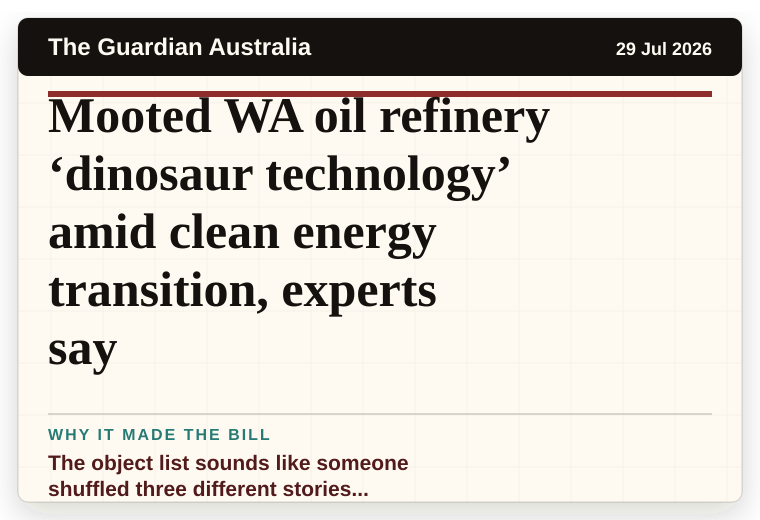
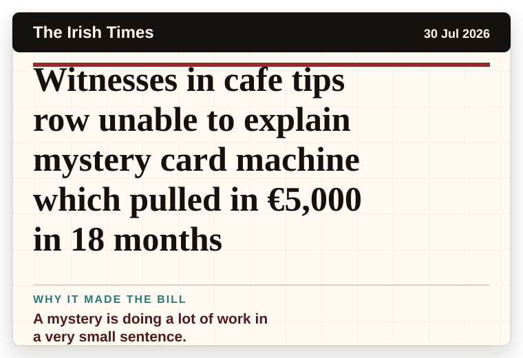
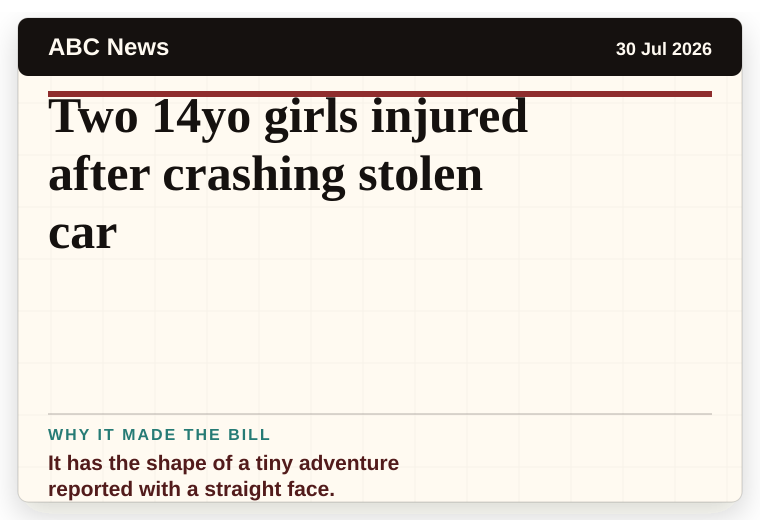
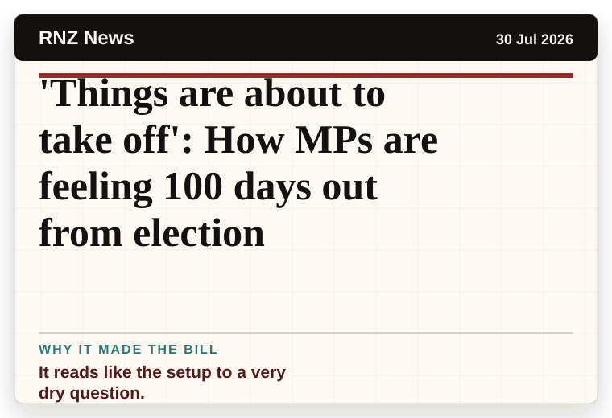
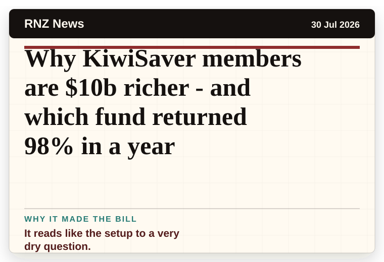

Daily Star Weird News
United Kingdom
Grandad, 75, caught 'thrusting with woman, 32, in pool' uses bizarre excuse to deny sex
The headline is already trying not to laugh.
The latest daily picks, linked back to the original sources. Search the room, pick a source, or follow a headline out to the full story.
Record updated: 30 Jul 2026, 07:52 AM AEST
Showing 13 headline candidates from the refresh run completed on 30 Jul 2026, 07:52 AM AEST.
The headline is already trying not to laugh.

A wonderfully specific detail has taken centre stage.

A mystery is doing a lot of work in a very small sentence.

The scale is doing deadpan comedy.

A wonderfully specific detail has taken centre stage.

A wonderfully specific detail has taken centre stage.

A mystery is doing a lot of work in a very small sentence.

The object list sounds like someone shuffled three different stories together.

A mystery is doing a lot of work in a very small sentence.

It has the shape of a tiny adventure reported with a straight face.

It reads like the setup to a very dry question.

It reads like the setup to a very dry question.

It reads like the setup to a very dry question.